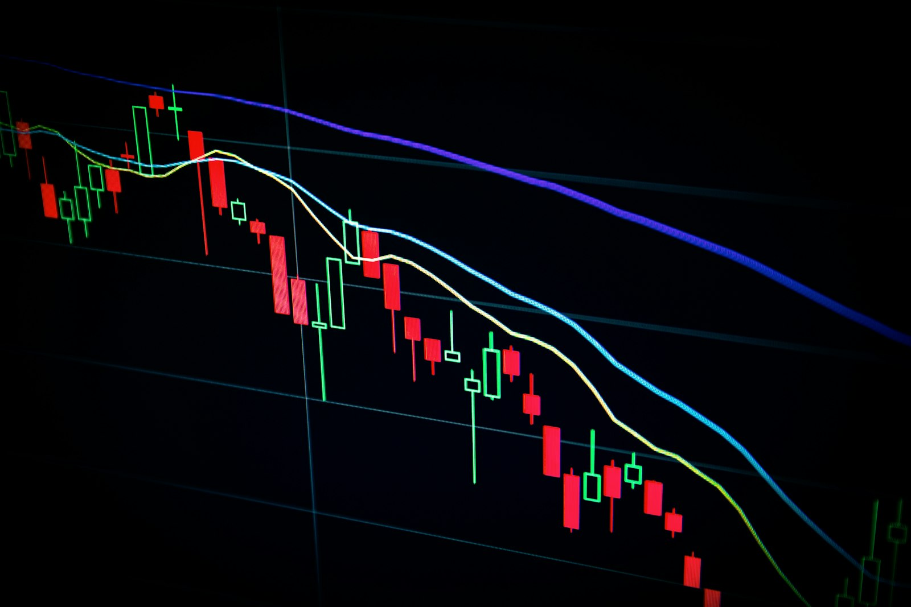
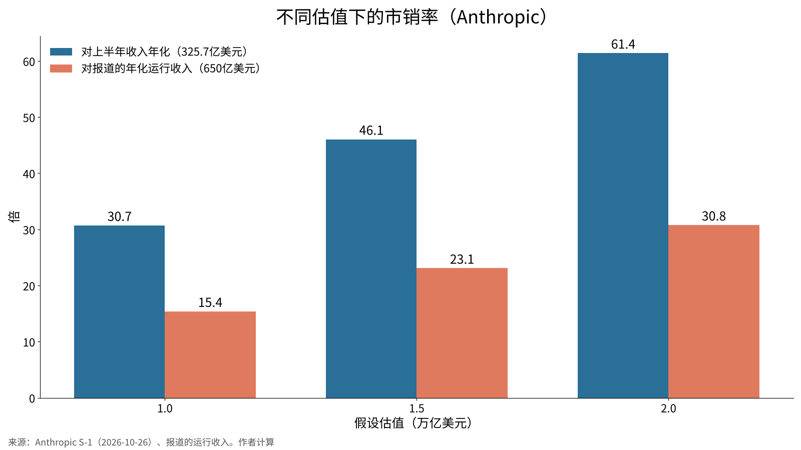
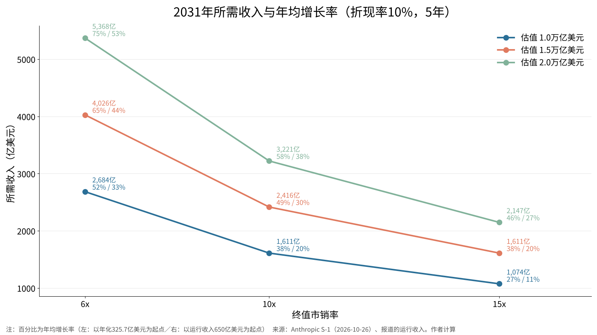

Anthropic与OpenAI的上市能否成功——用数字检验企业价值及对软银集团的影响
2026年10月26日，Anthropic向美国证券交易委员会（SEC）公开提交了S-1上市注册文件，在纳斯达克上市的程序正式启动。
本文的问题是：“1.5万亿至2.0万亿美元的估值以多大的收入增长为前提？OpenAI估值涨跌时，软银集团的净资产价值会变动多少？”
本文不以首日涨幅，而以数年后的股价能否支撑上市时的估值来定义上市“成功”，并用一手资料和学术数据加以检验。

问题与背景
根据Anthropic提交的S-1，上市地点为纳斯达克全球精选市场，股票代码为“ANT”[1]。提交时发行价区间为空白，主承销商以高盛和摩根士丹利为首，瑞穗与三菱日联的美国证券子公司也在承销团中[1]。据报道，募资额超过1,000亿美元，估值为1.5万亿至2.0万亿美元，预计11月中旬上市[7][8]。
OpenAI则在2026年3月募资1,220亿美元，投后估值据称为8,520亿美元[9]。2026年6月有报道称其已向SEC秘密提交上市文件[10]，但9月首席执行官阿尔特曼否认年内上市，并据报道正以约1.4万亿美元的估值洽谈至少300亿美元的过桥融资[11]。
对日本投资者而言，不可忽视的是软银集团（SBG）持有OpenAI约13%的股份。SBG于2026年2月决定追加投资300亿美元，并披露缴款完成后持股约13%，累计出资646亿美元[2]。截至2025年12月，累计出资为300亿美元，持股约11%[3]。
数据与方法
所用数值和计算如下，全部保存在data.json中。
第一，Anthropic的收入采用S-1数据。2026年上半年（1至6月）收入为162.86亿美元，上年同期为11.63亿美元，2025年全年为45.85亿美元[1]。将上半年收入乘以2得到“年化收入”325.7亿美元。另据报道，截至7月底的年化运行收入（run-rate）已超过650亿美元[12]。后者更能反映近期势头，但未经审计，因此本文以两者分别作为起点计算。
第二，市销率按“估值÷收入”计算。
第三，倒推支撑估值所需的收入。假设5年后（2031年）的企业价值等于当前估值按年10%复利增长后的金额。所需收入＝估值×1.1^5÷终值市销率，所需年均增长率＝（所需收入÷起点收入）^(1/5)−1。年10%是作为股票预期收益率的暂定值，敏感性分析中也测试了8%和12%。
第四，对SBG的影响按“13%×OpenAI估值”除以SBG的净资产价值（NAV）和市值计算。NAV为30,755亿元人民币，股价为253.66元人民币，扣除库存股后的已发行股数约56.99亿股，均为2026年6月末数据[4]。据此计算市值约为14,455亿元人民币（按1美元＝158.10日元、1美元＝6.7253元人民币换算）。
第五，上市后股价走势参考佛罗里达大学杰伊·里特（Jay Ritter）教授公布的美国IPO统计[5][6]。
结果
Anthropic的市销率如下。
| 假设估值 | 对年化收入（325.7亿美元） | 对运行收入（650亿美元） |
|---|---|---|
| 1.0万亿美元 | 30.7倍 | 15.4倍 |
| 1.5万亿美元 | 46.1倍 | 23.1倍 |
| 2.0万亿美元 | 61.4倍 | 30.8倍 |

S-1的损益仅看标题数字容易误读。2026年上半年净亏损为807.48亿美元，但其中723.88亿美元是可转换票据等公允价值变动造成的估值损失，并无现金流出[1]。营业亏损仅为6.93亿美元，公司披露的调整后营业利润为盈利16.18亿美元[1]。6月末现金及短期投资为1,316.51亿美元[1]。不过，AI基础设施的资本开支（据报道上半年为90亿美元）以及据称约4,300亿美元的云服务合同，将成为沉重的固定成本[7][8]。风险因素部分从第26页一直延续到第119页[1]。
对SBG的影响如下。
| OpenAI估值 | SBG所持13%的价值 | 相对累计出资646亿美元的倍数 | 占NAV比例 | 占市值比例 |
|---|---|---|---|---|
| 0.6万亿美元 | 780亿美元（5,246亿元人民币） | 1.21倍 | 17% | 36% |
| 0.852万亿美元 | 1,108亿美元（7,452亿元人民币） | 1.71倍 | 24% | 52% |
| 1.0万亿美元 | 1,300亿美元（8,743亿元人民币） | 2.01倍 | 28% | 60% |
| 1.4万亿美元 | 1,820亿美元（12,240亿元人民币） | 2.82倍 | 40% | 85% |
| 2.0万亿美元 | 2,600亿美元（17,486亿元人民币） | 4.02倍 | 57% | 121% |
若OpenAI估值从1万亿美元变为1.4万亿美元，SBG的持股价值将增加约3,497亿元人民币，相当于NAV的11%多。反之，若跌至0.6万亿美元，与2026年3月的估值相比将减少约2,203亿元人民币。
敏感性分析
调整了估值、终值市销率、折现率和起点收入四项假设。
| 估值 | 终值倍数 | 折现率 | 2031年所需收入 | 所需增长率（年化起点） | 所需增长率（运行收入起点） |
|---|---|---|---|---|---|
| 1.0万亿美元 | 6倍 | 10% | 2,684亿美元 | 52% | 33% |
| 1.0万亿美元 | 10倍 | 10% | 1,611亿美元 | 38% | 20% |
| 1.0万亿美元 | 15倍 | 10% | 1,074亿美元 | 27% | 11% |
| 1.5万亿美元 | 6倍 | 10% | 4,026亿美元 | 65% | 44% |
| 1.5万亿美元 | 10倍 | 10% | 2,416亿美元 | 49% | 30% |
| 1.5万亿美元 | 15倍 | 10% | 1,611亿美元 | 38% | 20% |
| 2.0万亿美元 | 6倍 | 10% | 5,368亿美元 | 75% | 53% |
| 2.0万亿美元 | 10倍 | 10% | 3,221亿美元 | 58% | 38% |
| 2.0万亿美元 | 15倍 | 10% | 2,147亿美元 | 46% | 27% |
| 1.5万亿美元 | 10倍 | 8% | 2,204亿美元 | 47% | 28% |
| 1.5万亿美元 | 10倍 | 12% | 2,644亿美元 | 52% | 32% |

在中间情形（估值1.5万亿美元、终值10倍、折现率10%）下，2031年需要约2,400亿美元的收入。以运行收入为起点需连续5年年增30%，以上半年年化收入为起点则需年增49%。对结果影响最大的是终值倍数，6倍与15倍之间所需收入相差2.5倍。折现率变动2个百分点，所需增长率仅变化2至3个百分点。
讨论
上市能否“成功”，需要分成两个问题来看。
第一是上市首日的表现。根据里特的数据，1980至2025年美国IPO首日平均涨幅为19.0%，2025年为29.3%[5]。需求旺盛时，首日上涨的环境较为有利。
第二是上市后数年的表现。1980至2024年上市的9,253家公司3年平均回报为19.1%，但比市场平均低20.5个百分点[6]。销售额10亿美元以上的大型IPO与市场的差距仅为负2.1个百分点，销售额1亿美元以上的科技公司则跑赢市场13.7个百分点[6]。Anthropic的规模更接近后者。不过，历史数据中几乎没有收入达325亿美元级别的上市案例，不能直接套用。
也存在相反的观点。AI需求容易受经济周期和电力约束影响，若模型性能差距缩小，就会出现价格竞争。届时终值倍数向6倍靠拢并不奇怪。那样的话，要支撑2.0万亿美元的估值，即便以运行收入为起点也需连续5年年增53%，意味着上市价格偏高。上市“成功”转为“失败”的路径就在此表的左上方。
就OpenAI而言，Anthropic上市后形成股价，就有了比较的标尺。若Anthropic股价上市后维持较高倍数，OpenAI的1.4万亿美元估值也更有依据；若大幅下跌，OpenAI的融资条件也可能收紧。对SBG来说，这种联动是最大的变量。SBG为投资OpenAI安排了400亿美元的过桥贷款，7月又追加借入100亿美元[4]。6月末贷款价值比（LTV）为13.0%，处于低位[4]，但资产集中度在上升。
也需说明数据的局限。运行收入、资本开支和云合同金额来自报道，笔者查阅的S-1版本中相应位置为空白[1]。OpenAI没有经审计的收入披露。SBG市值按6月末股价计算，与当前数值不同。
可能改变结论的因素有三个：S-1修订版中的发行价区间、上市后首个季度的收入增长率，以及OpenAI下一轮融资的估值。
结论
就首日表现而言，Anthropic的上市有可能获得需求支撑。但若以数年为单位衡量“成功”，即便估值为1.5万亿美元，也需以运行收入为起点连续5年年增约30%，并在终值时维持10倍市销率。这并非不可能的数字，但也谈不上宽裕。对SBG而言，OpenAI估值每变动4,000亿美元，NAV约变动11%。上市的成败不仅关乎两家AI公司，也直接关系到日本投资者所持资产的价值。
我的看法
我认为这个企业价值仍然便宜。无论是1.5万亿还是2万亿美元，对于一家我并不按季度利润来挑选的公司，我不觉得这个价格过高。
如果两家公司都顺利上市，我认为软银集团的股价会大幅上涨。正如上面的计算所示，OpenAI的估值一动，软银的NAV就会大幅变动。不过，我一股软银也没有持有。资金我放在了自己挑选的AI公司上。
我打算在上市当天，从股市买入约1,000万日元（约42.5万元人民币，约6.3万美元）的Anthropic股票。招股说明书里我先看营收、利润和市值这3项，并且已经决定，无论里面写了什么，都不会成为停止买入的理由。
正如上面的敏感性分析所示，成功的条件并不宽裕。即便如此，我也会以长期持有、而不是几年为前提买入。
出处
- Anthropic, PBC“Form S-1 Registration Statement”2026-10-26 https://www.sec.gov/Archives/edgar/data/0002130357/000162828026067168/anthropicpbc-sx1.htm
- 软银集团“Follow-on Investments in OpenAI”2026-02-27 https://group.softbank/en/news/press/20260227
- 软银集团“Completion of Additional $22.5 Billion Investment in OpenAI”2025-12-31 https://group.softbank/en/news/press/20251231
- 软银集团“2026财年第一季度财务数据表”2026-08-06 https://group.softbank/media/Project/sbg/sbg/pdf/ir/presentations/2026/earnings-datasheet_q1fy2026_02.pdf
- Jay R. Ritter（佛罗里达大学）“Initial Public Offerings: Updated Statistics”2026-10-05 https://site.warrington.ufl.edu/ritter/files/IPO-Statistics.pdf
- Jay R. Ritter（佛罗里达大学）“Initial Public Offerings: Updated Long-run Statistics”2026-10-05 https://site.warrington.ufl.edu/ritter/files/IPOs-long-run-returns-on-IPOs.pdf
- 共同社（OANDA证券转载）“Anthropic向美国SEC公开提交上市申请”2026-10-26 https://www.oanda.jp/lab-education/market_news/kn_2026102601001646/
- Yahoo Finance“Anthropic publicly files IPO prospectus, noting strong revenue growth and massive spending”2026-10-26 https://finance.yahoo.com/technology/article/anthropic-publicly-files-ipo-prospectus-noting-strong-revenue-growth-and-massive-spending-131807138.html
- Quartz“OpenAI funding round valuation”2026-04-01 https://qz.com/openai-funding-round-valuation-ipo-chatgpt
- Bloomberg Government“OpenAI Files Confidentially for IPO as Rivals Compete for Cash”2026-06-09 https://news.bgov.com/ip-law/openai-filed-confidentially-for-ipo-as-rivals-race-to-market
- DealStreetAsia（路透社）“OpenAI targets $30b bridge financing at $1.4 trillion valuation”2026-09-30 https://www.dealstreetasia.com/stories/openai-funding-2-496629
- Axios“Anthropic's revenue run rate reportedly surpasses $65 billion pre-IPO”2026-08-17 https://axios.com/2026/08/17/anthropic-revenue-run-rate-ipo-openai
照片：Maxim Hopman（Unsplash）。图表由YUKI CAPITAL制作
每天的数字和判断，我都记录在X上。